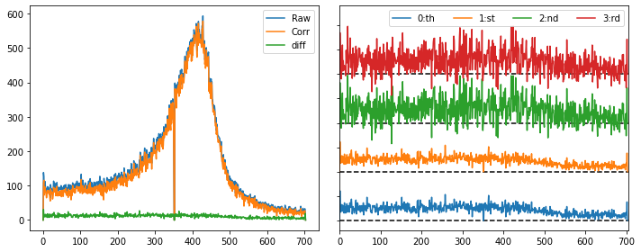

Constructing final spectra¶
import h5py
import numpy as np
import matplotlib.pyplot as plt
def load_runs(runs,bt):
'''
Load hdf5-file from runs, containing
(x,y) coordinates of droplets [dim ndroplets]
intensity of droplets [dim ndroplets]
number of droplets [dim nshots]
intensity of pulses [dim nshots]
Call: x,y,adi,ndrop,gmd = load_runs([run1,run2,...],bt)
'''
x = []; y = []; adu = []; ndrop = []; gmd = []
for run in runs:
if bt == 'instruction':
fh = h5py.File('../../example_data/run-%03d.h5' %run, 'r')
X = fh['x'][()]; Y = fh['y'][()]; I = fh['adu'][()]
N = fh['ndroplets'][()]; E = fh['pulse_energy'][()]
fh.close()
x.append(X); y.append(Y); adu.append(I),ndrop.append(N); gmd.append(E)
return np.concatenate(x),np.concatenate(y),np.concatenate(adu),np.concatenate(ndrop),np.concatenate(gmd)
def det_geom(img,bt):
'''
Correct image for detector geometry
'''
if bt == 'instruction':
new_img = []; I = 0
for i in np.arange(709):
if (i > 352) and (i < 358): new_img.append(np.zeros(len(img[0])+5))
else:
tmp = img[I]
for j in np.arange(5): tmp = np.insert(tmp, 384, 0.0)
new_img.append(tmp); I += 1
return new_img
def create_img_v1(x,y,adu,ndrop,adu_int,scale_signal):
'''
Version 1 of a script which creates the full image
Call: img = create_img_v1(x,y,adu,ndrop,adu_interval,scale_signal)
'''
ind, = np.where((adu >= adu_int[0]) & (adu <= adu_int[1]))
if scale_signal == True: img, xedges, yedges = np.histogram2d(x[ind], y[ind], bins=[np.arange(705), np.arange(769)],weights=adu[ind])
elif scale_signal == False: img, xedges, yedges = np.histogram2d(x[ind], y[ind], bins=[np.arange(705), np.arange(769)])
det_geom(img,'instruction')
return img
def create_img(x,y,adu,ndrop,adu_int,scale_signal):
'''
Create image with some ADU signals
Call: img = create_img_v1(x,y,adu,ndrop,adu_interval,scale_signal)
'''
ind, = np.where((adu >= adu_int[0]) & (adu <= adu_int[1]))
if scale_signal == True: img, xedges, yedges = np.histogram2d(x[ind], y[ind], bins=[np.arange(705), np.arange(769)],weights=adu[ind])
elif scale_signal == False:
img_1ph, xedges, yedges = np.histogram2d(x[ind], y[ind], bins=[np.arange(705), np.arange(769)])
ind, = np.where((adu >= 2.0*adu_int[0]) & (adu <= 2.0*adu_int[1]))
img_2ph, xedges, yedges = np.histogram2d(x[ind], y[ind], bins=[np.arange(705), np.arange(769)])
img = img_1ph + 2.0*img_2ph # scale 2-photon image by factor 2
det_geom(img,'instruction')
return img
def plot_raw(runs,roi,adu_int,plot_results,bt):
'''
Plot histogram, detector image, and projections
Can include an ROI or do this over full image
Call: spat_spec,xes_spec = plot_raw(runs,roi,adu_int,plot_results,bt)
'''
x,y,adu,ndrop,gmd = load_runs(runs,bt)
print('Looking at runs {}-{} from expt \'{}\', with {:.2e} shots and {:.2e} droplets.'.format(runs[0],runs[len(runs)-1],bt,len(ndrop),sum(ndrop)))
img = create_img(x,y,adu,ndrop,adu_int,False)
spat_spec = np.sum(img, axis=0)/len(ndrop)
xes_spec = np.sum(img, axis=1)/len(ndrop)
if plot_results == True:
plt.figure(figsize=(16,4))
plt.subplot(141); plt.title('Detector image')
vmin, vmax = np.percentile(img, [1, 99])
plt.imshow(img, origin='lower',vmin=vmin, vmax=vmax,aspect='auto')
if roi != False:
plt.plot([roi[2],roi[2]],[roi[0],roi[1]],'w--')
plt.plot([roi[3],roi[3]],[roi[0],roi[1]],'w--')
plt.xlim((0,len(img[0]))); plt.ylim((0,len(img)))
plt.subplot(142); plt.title('Spatial projection')
plt.plot(spat_spec,'b')
plt.plot([roi[2],roi[2]],[0,max(np.sum(img, axis=0)/len(ndrop))],'r--')
plt.plot([roi[3],roi[3]],[0,max(np.sum(img, axis=0)/len(ndrop))],'r--')
plt.xlim((roi[2]-50,roi[3]+50))
plt.ylabel('Signal / no. shots')
plt.subplot(143); plt.title('Energy-dispersive projection')
plt.plot(xes_spec,'b')
plt.ylabel('Signal / no. shots')
plt.subplot(144); plt.title('Histogram')
ind, = np.where((y >= roi[2]) & (y <= roi[3]))
p = np.percentile(adu[ind], 99.9) # 99.9th percentile, for xmax
hist, bin_edges = np.histogram(adu[ind],bins = np.arange(0,p,p/500.))
ylims = [0.0001*np.max(hist),1.1*np.max(hist)]
plt.plot([adu_int[0],adu_int[0]],ylims,'-',color='r')
plt.plot([adu_int[1],adu_int[1]],ylims,'-',color='r')
plt.plot(bin_edges[1:]-0.5,hist,'b'); plt.yscale('log')
plt.tight_layout()
return spat_spec,xes_spec
runs = [1]
adu_int = [97.0,123.0]
roi = [0,705,310,348]
bt = 'instruction'
adu_int = [97.0,123.0]
x,y,adu,ndrop,gmd = load_runs(runs,bt)
img = create_img(x,y,adu,ndrop,adu_int,False)
def remove_background_order(img, a, b, c, d, o):
x = np.concatenate((np.arange(a, b), np.arange(c, d)))
img_corrected = np.copy(img)
for i in range(img.shape[0]):
y = np.concatenate((img[i, a:b], img[i, c:d]))
poly = np.poly1d(np.polyfit(x, y, o))
img_corrected[i, :d] = img[i, :d] - poly(np.arange(d))
return img_corrected
fit = [284,304,358,378]
raw_spec = np.sum(img[roi[0]:roi[1]:,roi[2]:roi[3]], axis=1)
zer_spec = np.sum(remove_background_order(img, fit[0], fit[1], fit[2], fit[3],0)[roi[0]:roi[1]:,roi[2]:roi[3]], axis=1)
one_spec = np.sum(remove_background_order(img, fit[0], fit[1], fit[2], fit[3],1)[roi[0]:roi[1]:,roi[2]:roi[3]], axis=1)
two_spec = np.sum(remove_background_order(img, fit[0], fit[1], fit[2], fit[3],2)[roi[0]:roi[1]:,roi[2]:roi[3]], axis=1)
thr_spec = np.sum(remove_background_order(img, fit[0], fit[1], fit[2], fit[3],3)[roi[0]:roi[1]:,roi[2]:roi[3]], axis=1)
plt.figure(figsize=(10,4))
plt.subplot(121)
plt.plot(raw_spec); plt.plot(one_spec); plt.plot(raw_spec-one_spec)
plt.legend(('Raw','Corr','diff'))
plt.subplot(122)
plt.plot(raw_spec-zer_spec); plt.plot(raw_spec-one_spec+50)
plt.plot(raw_spec-two_spec+100); plt.plot(raw_spec-thr_spec+150)
plt.plot([0,705],[0,0],'k--',zorder=1); plt.plot([0,705],[50,50],'k--',zorder=1)
plt.plot([0,705],[100,100],'k--',zorder=1); plt.plot([0,705],[150,150],'k--',zorder=1)
plt.legend(('0:th','1:st','2:nd','3:rd'),ncol=4)
plt.yticks([0,25,50,75,100,125,150,175,200],[])
plt.xlim((0,705)); plt.ylim((-10,220))
plt.tight_layout(); plt.show()

def remove_background(img, a, b, c, d):
x = np.concatenate((np.arange(a, b), np.arange(c, d)))
img_corrected = np.copy(img)
for i in range(img.shape[0]):
y = np.concatenate((img[i, a:b], img[i, c:d]))
poly = np.poly1d(np.polyfit(x, y, 1))
img_corrected[i, :d] = img[i, :d] - poly(np.arange(d))
return img_corrected
# bring to zero
#
#
# remove footprint
#
#
# interpolation
#
#
def interpolate_epix_gap(spectrum,bt):
if (bt == 'LR81'):
a, b = 309, 349; c, d = 361, 401
xaxis = np.arange(spectrum.shape[0])
x = np.concatenate((xaxis[a:b], xaxis[c:d]))
y = np.concatenate((spectrum[a:b], spectrum[c:d]))
poly = np.poly1d(np.polyfit(x, y, 2))
spectrum[b:c] = poly(xaxis[b:c])
# energy calibration
#
#
def energy_axis(A,R,bt):
d = 0.9601
if (bt == 'LR81'):
pix = 0.05; l = np.arange(709).astype(np.float64)
l *= pix
ll = l/2 - (np.amax(l) - np.amin(l)) / 4
factor = 1.2398e4
xaxis = factor / (2.0*d*np.sin(np.arctan(R/(ll + A))))
return xaxis
axis_para = [50.72,498.21]
proj_spectrum_v1
if axis_para == False:
xaxis = False
else:
xaxis = energy_axis(axis_para[0],axis_para[1],bt)
check with different ADU intervals
File "<ipython-input-9-9e844964363b>", line 7
check with different ADU intervals
^
SyntaxError: invalid syntax
runs = [1,2,3,4,5,6]
plt.figure(figsize=(8,4))
ax0 = plt.subplot(121); plt.title('Spatial projection')
ax1 = plt.subplot(122); plt.title('Energy-dispersive projection')
adu_ints = [[102.0,117.0],[97.0,123.0],[92.0,128.0]]
for adu_int in adu_ints:
spat_spec,xes_spec = plot_raw(runs,roi,adu_int,False,bt)
ax0.plot(spat_spec/sum(spat_spec))
ax1.plot(xes_spec/sum(xes_spec))
ax0.set_xlim((roi[2]-50,roi[3]+50))
ax0.legend((adu_ints))
ax0.set_ylabel('Signal / no. shots')
ax1.set_ylabel('Signal / no. shots')
plt.tight_layout(); plt.show()
Looking at runs 1-6 from beamtime 'instruction', with 6.33e+04 shots.
Looking at runs 1-6 from beamtime 'instruction', with 6.33e+04 shots.
Looking at runs 1-6 from beamtime 'instruction', with 6.33e+04 shots.
def proj_spectrum(runs,roi,fit,adu_int,axis_para,thr,plot_proj,bt):
if axis_para == False:
xaxis = False
else:
xaxis = energy_axis(axis_para[0],axis_para[1],bt)
if thr == False:
x,y,adu,ndroplets,gmd = load_runs(runs,bt)
print 'Looking at data from beamtime',bt,'with',len(ndroplets),'shots.'
img,vmin,vmax = create_img(runs,x,y,adu,adu_int,adu_int[2],bt)
if bt == 'LV30':
img[:400,:] = 0.0
elif bt == 'LS10':
img[550:,:] = 0.0; img[:,:150] = 0.0; img[:,250:] = 0.0
cor_spec = np.sum(remove_background(img, fit[0], fit[1], fit[2], fit[3])[:,roi[0]:roi[1]], axis=1)
interpolate_epix_gap(cor_spec,bt)
if plot_proj:
tmp_spat = np.sum(img, axis=0)
cor_spat = np.sum(remove_background(img, fit[0], fit[1], fit[2], fit[3]), axis=0)
tmp_spec = np.sum(img[:,roi[0]:roi[1]], axis=1)
else:
x,y,adu,ndroplets,gmd,rej,hitinfo = HitFinder(runs,thr,roi,fit,adu_int,False,bt)
img,vmin,vmax = create_img(runs,x,y,adu,adu_int,adu_int[2],bt)
if bt == 'LV30':
img[:400,:] = 0.0
elif bt == 'LS10':
img[550:,:] = 0.0; img[:,:150] = 0.0; img[:,250:] = 0.0
cor_spec = np.sum(remove_background(img, fit[0], fit[1], fit[2], fit[3])[:,roi[0]:roi[1]], axis=1)
interpolate_epix_gap(cor_spec,bt)
if plot_proj:
x_all,y_all,adu_all,ndroplets_all,gmd_all = load_runs(runs,bt)
img_all,vmin,vmax = create_img(runs,x_all,y_all,adu_all,adu_int,adu_int[2],bt)
cor_spat = np.sum(img, axis=0)
tmp_spat = np.sum(img_all, axis=0)
tmp_spec = np.sum(remove_background(img_all, fit[0], fit[1], fit[2], fit[3])[:,roi[0]:roi[1]], axis=1)
interpolate_epix_gap(tmp_spec,bt)
if plot_proj:
fig = plt.figure(figsize=(12,3))
################
plt.subplot(141); plt.title('Detector image',fontsize=9)
plt.imshow(img, origin='lower',vmin=vmin, vmax=vmax,aspect='auto')
plt.plot([roi[0],roi[0]],[roi[2],roi[3]],'w-'); plt.plot([roi[1],roi[1]],[roi[2],roi[3]],'w-')
plt.plot([fit[0],fit[0]],[roi[2],roi[3]],'w--');plt.plot([fit[1],fit[1]],[roi[2],roi[3]],'w--')
plt.plot([fit[2],fit[2]],[roi[2],roi[3]],'w--');plt.plot([fit[3],fit[3]],[roi[2],roi[3]],'w--')
plt.xlim((fit[0]-20,fit[3]+20))
plt.ylim((roi[2],roi[3]))
plt.xticks(fontsize=8); plt.yticks(fontsize=9)
################
plt.subplot(142); plt.title('Spatial projection',fontsize=9)
plt.plot(tmp_spat/len(ndroplets))
plt.plot(cor_spat/len(ndroplets),'r')
plt.plot((tmp_spat-cor_spat)/len(ndroplets),'k')
ylims = [0,0.8*max(tmp_spat)/len(ndroplets)]
plt.plot([roi[0],roi[0]],ylims,'g'); plt.plot([roi[1],roi[1]],ylims,'g')
plt.plot([fit[0],fit[0]],ylims,'g--');plt.plot([fit[1],fit[1]],ylims,'g--')
plt.plot([fit[2],fit[2]],ylims,'g--');plt.plot([fit[3],fit[3]],ylims,'g--')
plt.xlim((fit[0]-20,fit[3]+20))
plt.ylim((0,1.05*max(tmp_spat)/len(ndroplets)))
plt.xticks(fontsize=9); plt.yticks(fontsize=9)
plt.ylabel('Signal / no. shots',fontsize=9)
################
plt.subplot(143); plt.title('Spectrum',fontsize=9)
if axis_para == False:
plt.plot(tmp_spec/len(ndroplets))
plt.plot(cor_spec/len(ndroplets),'r')
plt.plot((tmp_spec-cor_spec)/len(ndroplets),'k')
else:
plt.plot(xaxis,tmp_spec/len(ndroplets))
plt.plot(xaxis,cor_spec/len(ndroplets),'r')
plt.plot(xaxis,(tmp_spec-cor_spec)/len(ndroplets),'k')
plt.xlim(6480,6500)
if thr == False: plt.legend(('Raw','Corr.','Bkgrd'),fontsize=9,loc='upper left')
else: plt.legend(('All','Hits','Diff.'),fontsize=9,loc='upper left')
plt.ylabel('Signal / no. shots',fontsize=9)
plt.ylim((0,1.05*max(tmp_spec)/len(ndroplets)))
plt.xticks(fontsize=9); plt.yticks(fontsize=9)
################
plt.subplot(144); plt.title('Final spectrum',fontsize=9)
if axis_para == False:
plt.plot(cor_spec,'r')
else:
plt.plot(xaxis,cor_spec,'r')
plt.xlim(6480,6500)
plt.ylabel('Total intensity [counts]',fontsize=9)
plt.ylim((0,1.05*max(cor_spec)))
plt.xticks(fontsize=8); plt.yticks(fontsize=9)
################
plt.tight_layout()
return xaxis,cor_spec